Sequences
Eight little scenes made of markers, each a recipe you can copy card by card: someone who takes a mug to the sofa and looks at it, someone you hand an apple to, a customer at your till, something that leans round a corner and is behind you a moment later. Every one of them is built and played by a check, so the cards below are the cards that work.
1What this is
The NPC markers guide shows the tab; the Animator's guide shows the animations. This one puts them together: what to click, in what order, to get a scene that reads as a person doing something. Nothing here is scripted. Each recipe is one character, one quest, and a short list of cards.
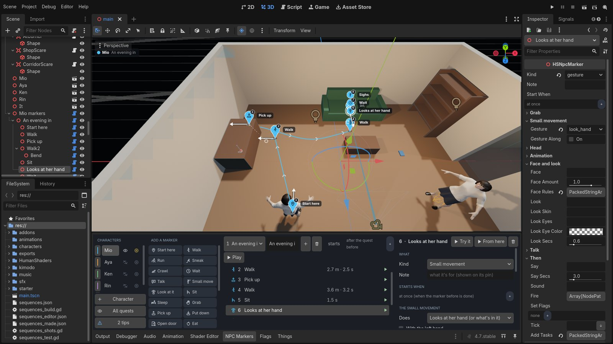
What you need
- A project made by
python tools/godot_byhand.py new <folder>(it has the Markers, Look and UI plugins and the starter kit). An older project:python tools/godot_byhand.py install <folder> --starter. - A character exported from the Character Studio and baked in the Animator since its small movements (96 clips on a person). One baked earlier walks and sits, but has no small movements, no peek and nothing for a hand to do: the tab's Problems says which clip is missing at which marker. Open her in the Animator and press Bake again.
- A room. Any interior will do if it keeps the few sizes the animations are made for.
The finished scene, to walk through
All eight recipes live in one scene: a flat, a shop in front of it and a corridor beside it. This builds it as a project of its own (the characters are the Animator's three test characters when their exports are on the machine, else plain grey test bodies):
python tools/godot/sequences.py --keep ~/games/sequences
With characters of your own in the three parts (their names in the Character Studio, exported for Godot):
python tools/godot/sequences.py --keep ~/games/sequences --cast woman=NAME,man=NAME,creature=NAME
Open that folder in Godot and press F5. You start in the flat. Mio takes her mug to the sofa; Aya tidies up and wants to talk; step behind the shop's counter and a customer comes in; walk into the corridor and something looks back at you. F7 shows what every character is doing and waiting for, and the flags.
2How to read a recipe
Each recipe has a table. One row is one marker, in the order they run:
| # | The marker's number, as on its pin and in the storyboard. 4A.1 is the first marker inside the first way of the Choice 4. |
| Card | The card to click in the tab's palette. |
| Click in the 3D view | Where to click after the card. A dash: the card has no pin, it's added at once. |
| In its form | What to change on the right of the tab once the marker is picked. Everything not listed stays as the card made it. |
Above each table: whose it is, the quest's name, and the quest's Starts when (set with the quest picked). To build one: select the character's model, press + Character, name the quest, then go down the rows.
Three things are worth knowing before the first recipe, because every one of them uses them:
A marker waits for its Starts when
Until it's so, she stays as the marker before left her. That's how someone waits for you to bring something: the next marker starts when you carry it.
A Wait leaves her as she is
Sat stays sat, looking out past a wall stays looking. Only a marker that moves her (a Walk, a Grab) gets her up first.
Small movements are a layer
A look at her hand, a scratch, a sigh are laid over whatever she's doing: her legs go on walking, her seat stays sat. One by a card when you want it; now and then by themselves with Alive.
3The place, and its things
A character doesn't see the room. She goes where her markers say and her hand goes where her clip was made to
reach, so the furniture has to be where the clips expect it. These are the sizes this scene keeps (all of them, with
what happens outside them, are in docs/ANIMATION_RULES.md):
| A thing she takes | on something 0.8 to 1.0 m high (the table here is 0.82), on the floor, or on a shelf at 1.3 to 1.6 m; within 0.30 m of the edge, with floor in front of it. A dining table at 0.75 m is between her reaches: her hand stops above it. |
| A seat | 0.40 to 0.50 m high, 0.55 m behind its front edge before any back, 0.35 m of floor in front. The coffee table stands a metre off the sofa. |
| Where she waits with small movements on | half a metre free to each side and in front of her: an elbow needs it. |
| A counter she stands at with something in her hand | 0.45 m between her and it, or the can is in the counter. |
| A wall she peeks round | a plain upright end, floor to above her head, with a metre of floor behind it. |
The things, made with the Things tab
Select a model, click a card in the Things tab (the flags guide has them all):
| The mug, the book, the key | plain models. She takes them herself: they need nothing. The mug and the key have an HSGrip under them (below). |
| The apple, the cans of soda | Pickup (Item: apple, soda): you take them with E. |
| The cellar door | Logic: Works only when you carry cellar_key; says "Locked. It wants a key."; then Flags + cellar_open. |
| Behind the counter, the corridor's start, its corner | three Areas, each with a Fact: behind_counter, in_corridor, at_corner. Walking in turns the flag on, and a quest starts on it. |
| The shop's lights, the corridor's | two Scares with Walk In off, Lights Do: flicker, Lights Of: the room's lamps. A marker fires them. |
Set up the scene, in the same tab, adds the player, the Story, the HUD and Sound if the scene hasn't got them.
4A mug, the sofa, a look at it
Someone comes in, takes her mug off the table, carries it to the sofa, sits, and looks at it for a moment. It's the smallest scene that reads as a person, and it's four ideas: a thing kept in the hand is carried, a walk can curve, a seat is where its pin is, and a small movement can be asked for by name.
Mio, quest An evening in · Starts when: at once (the game starts)
| # | Card | Click in the 3D view | In its form |
|---|---|---|---|
| 1 | Start here | the floor by the door | — |
| 2 | Walk | the floor in front of the table; turn its arrow to the table | — |
| 3 | Pick up | the mug | It stays in the hand: on |
| 4 | Walk | the floor in front of the sofa; click the + on its path and drag the bend clear of the coffee table | Turns to the arrow at the end: off |
| 5 | Sit | the sofa's front edge; the arrow the way her knees point | Stays: for some seconds, 1.5 |
| 6 | Look at it | — | (nothing to set: it looks at what's in her hand) |
| 7 | Wait | — | Seconds: 4 (she stays sat) |
| 8 | Small movement | — | Does: Sighs |
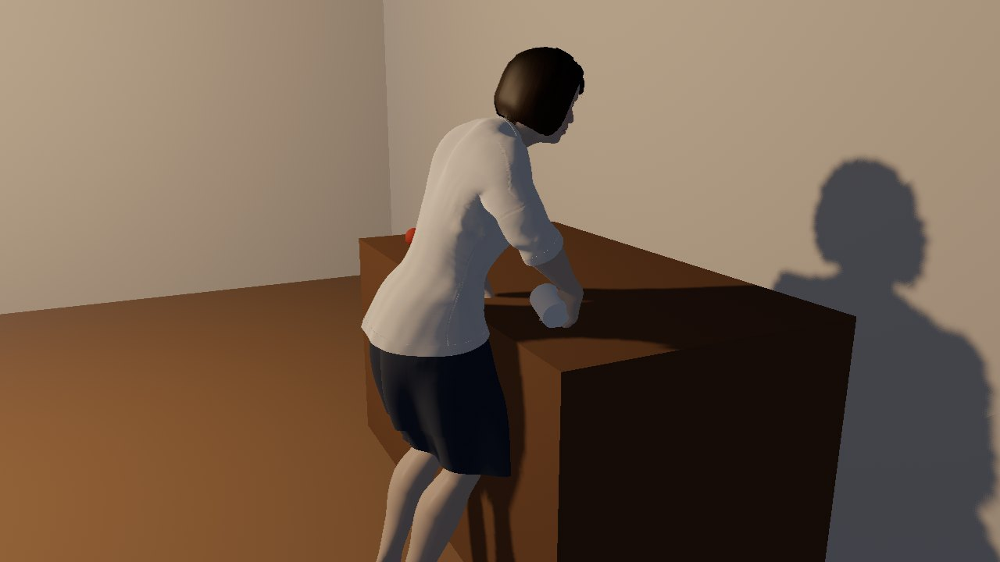
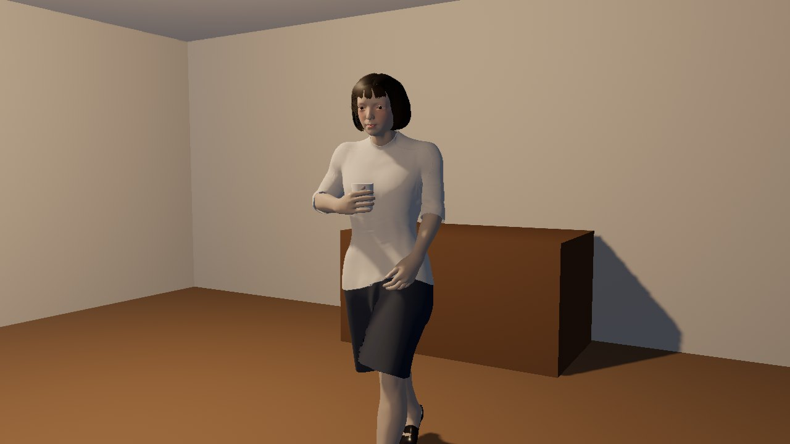
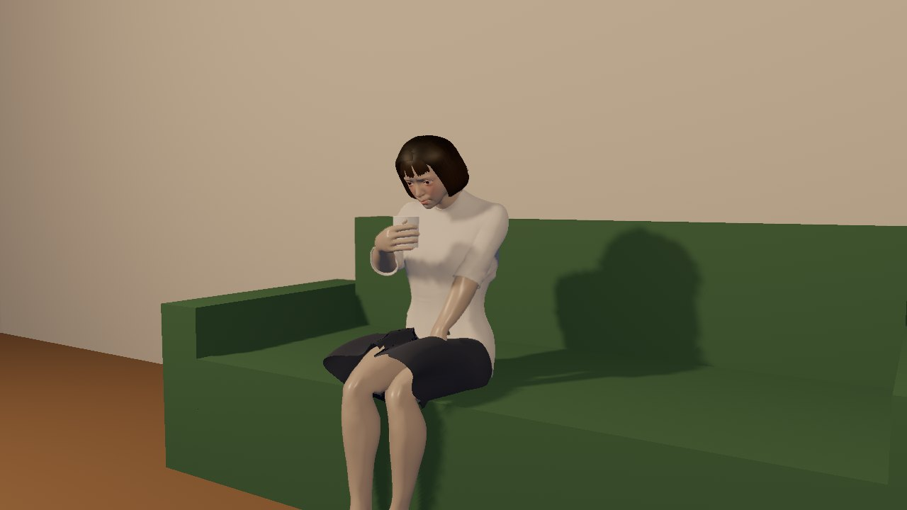
Why it works
- Walk, then Pick up. A Pick up walks her the last step to where her hand reaches, in a straight line. Put a Walk before it so she arrives by the way you want, facing the table.
- It stays in the hand is what makes the rest: from there on the mug is carried through every walk, seat and wait. Off, it's put away (hidden) as her hand comes back.
- The bend. Click the + in the middle of a path and drag: the walk goes through it as one curve. One bend is enough to pass a coffee table.
- Sit's pin is on the seat's front edge at sitting height, the arrow the way her knees point. Not the middle of the cushion.
- Then a Wait. She's sat, so she waits sat. Tick Alive on the character (click her name in the tab) and she goes on with small movements by herself: a look at the mug comes up more often than anything else, because she's holding it.
Change it
- Swap the mug for a book or a phone: the same cards. A thing with no grip is held by a guess from its size.
- After the Wait: Put down on the side table, Sleep on the sofa's edge.
- Give the quest a Starts when (a task ticked, a flag): the evening begins when the day's work is done.
5Tidying up, then asking you
Someone picks a book up off the floor, carries it to the shelf, puts it up, dusts her hands, goes back to her spot and wants a word. Three heights for one hand, and the way into every recipe that needs you: a Talk that puts a task on your list.
Aya, quest Tidying up · Starts when: at once (the game starts)
| # | Card | Click in the 3D view | In its form |
|---|---|---|---|
| 1 | Start here | the floor where she starts | — |
| 2 | Walk | the floor a step west of the book; arrow to the book | — |
| 3 | Pick up | the book on the floor | It stays in the hand: on |
| 4 | Walk | the floor in front of the bookshelf; arrow to the shelf | — |
| 5 | Put down | the shelf at eye height, near its front edge | — |
| 6 | Small movement | — | Does: Rubs her hands |
| 7 | Walk | the floor where she waits; arrow into the room | — |
| 8 | Talk | — | Lines: "There. Tidy." / "I haven't eaten all day. Is that apple still on the table?" · Head: follows you · Then, Adds tasks: apple: Bring Aya the apple from the table. |
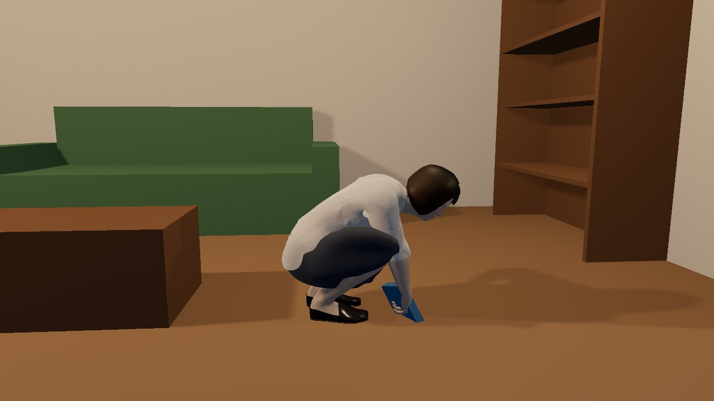
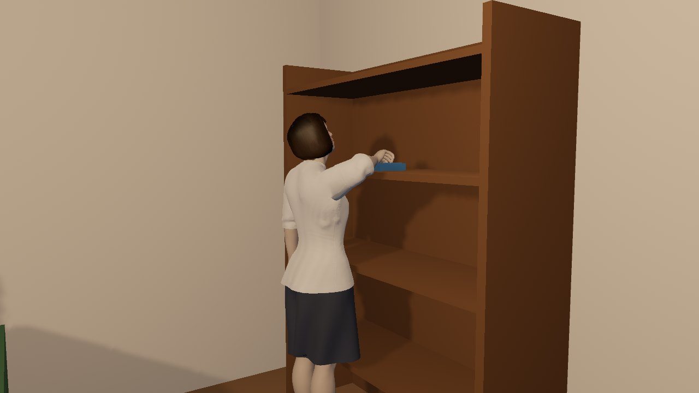
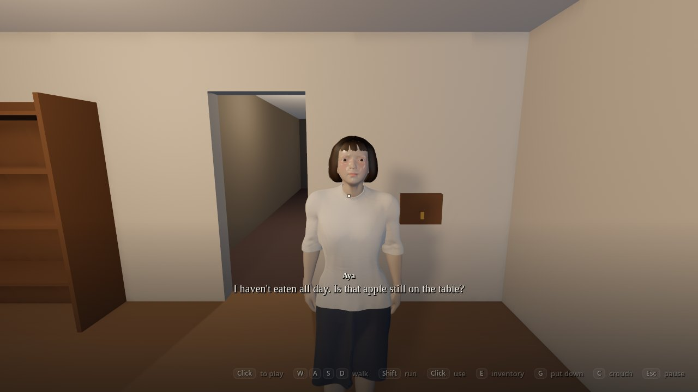
Why it works
- Put down's pin is the place of the thing, not of her feet. Put it near the front edge of the shelf (within 0.30 m): further in and her hand stops short. It's put down the way up it stood before she took it, so a book lies flat again.
- A small movement after an act reads as a thought: she rubs her hands because she's finished. Pick it by name (Does) rather than leaving it to chance.
- Talk stays until you talk. Nothing after it runs until you've heard her out, so a Talk is a gate as well as a line. Head: follows you on it and she watches you cross the room while she waits.
- Then: Adds tasks is how a marker hands you a job. The next recipe waits for you to do it.
6You give her the apple and she eats it
She asked for the apple. You take it off the table (E: it's a Pickup) and walk up to her; she turns to you, holds out her hand, the apple leaves your pocket and is in it, and she eats it. This is a new quest of hers that starts the moment you carry apple and you're within 2.2 m.
Aya, quest The apple · Starts when: you carry apple, you're within 2.2 m
| # | Card | Click in the 3D view | In its form |
|---|---|---|---|
| 1 | Take from you | — | The thing: apple (picked from the list) · It stays in the hand: on · Then, Says: "Oh, you found it!" |
| 2 | Eat | the floor beside her (the pin isn't used) | The thing: left empty: she eats what's in her hand |
| 3 | Wait | — | Seconds: 2.5 · Face: Smile · Then, Says: "Thank you. I needed that." · Ticks: apple · Flags: + aya_fed (switched when the wait is over) |
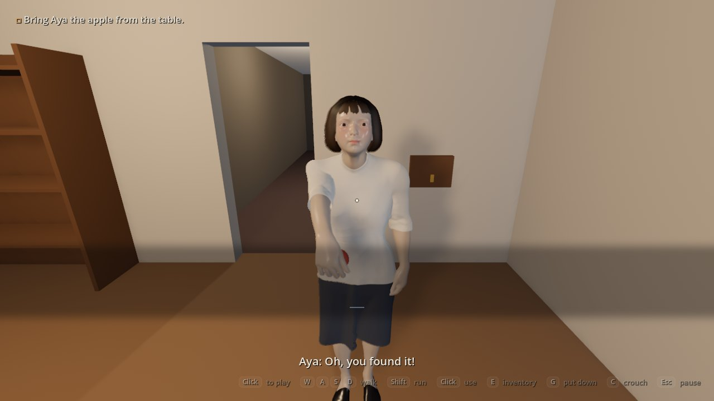
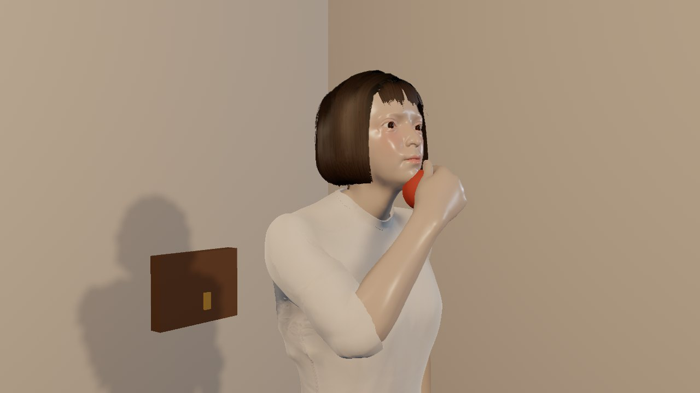
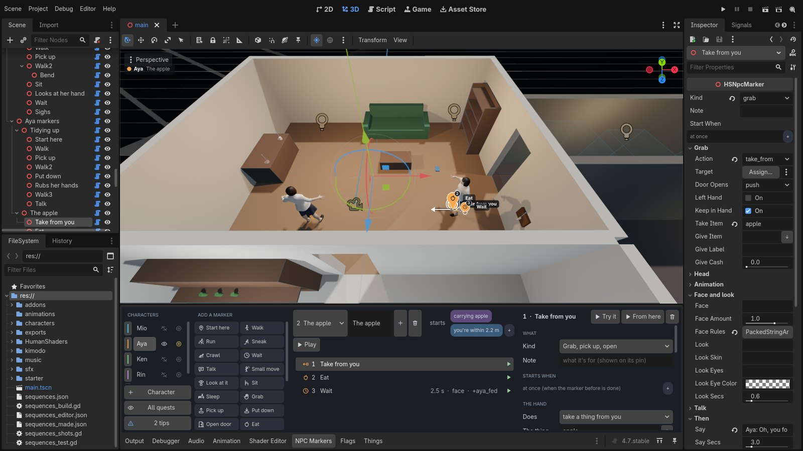
Why it works
- The quest waits, not the marker. A quest with a Starts when cuts in the moment it's so, wherever she is in the quest before. So she can be tidying, waiting or talking: come near with the apple and this starts.
- Take from you has no pin. It happens where she stands. What ends up in her hand is the model your pocket had for the thing (the Pickup's own mesh).
- It stays in the hand: on is what lets the Eat find it. Off, she takes it and puts it away: someone accepting a letter.
- Flags at the end of a Wait. The last marker says her thanks, waits 2.5 s, and only then switches
aya_fed: the next quest starts on that flag, and her line has had time to be read.
Change it
- Drink instead of Eat for a bottle: it stays in her hand afterwards. Follow it with Put down.
- She takes it and looks at it: Take from you → Look at it → a line. A photograph, a ring.
- Make her ask first with a Choice: a Talk whose answers are "Here." and "Not yet." and a way for each.
7She fetches a key and hands it to you
Fed, she says "Wait. You'll want this for the cellar", goes to the hook by the door, takes the key down, comes to you and holds it out. It's in your pocket as Cellar key, and the cellar door, which wanted it, opens.
Aya, quest The cellar key · Starts when: the flag aya_fed
| # | Card | Click in the 3D view | In its form |
|---|---|---|---|
| 1 | Wait | — | Seconds: 1.5 · Then, Says: "Wait. You'll want this for the cellar." |
| 2 | Walk | the floor in front of the key's hook; arrow to the wall | — |
| 3 | Pick up | the key on its hook | It stays in the hand: on |
| 4 | Walk | — | Comes to you instead of to the pin: on · Stops: 1.0 m from you |
| 5 | Hand to you | — | Gives: left empty (what's in her hand) · Called: Cellar key · Then, Says: "Don't lose it." · Adds tasks: cellar: Open the cellar door at the end of the corridor. |
| 6 | Walk | the floor where she waits | — |
| 7 | Talk | — | Stays: until the next marker can start · Lines: "The cellar's at the end of the corridor. I don't go down there." |
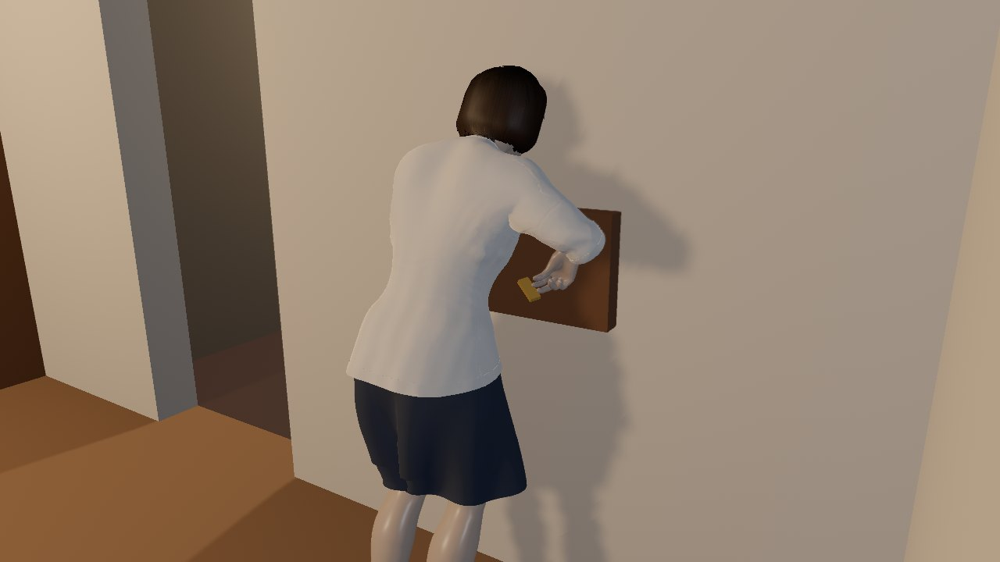
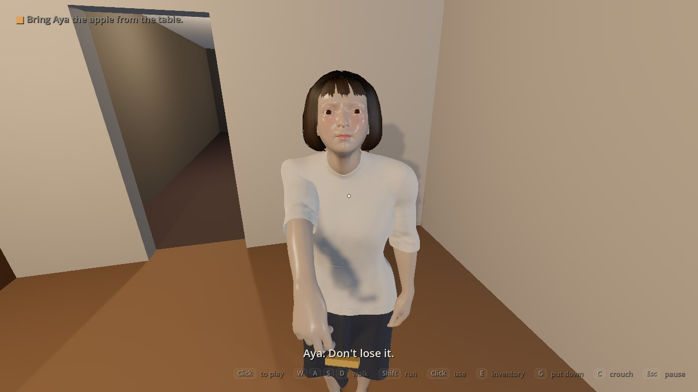
Why it works
- A Walk that comes to you has no pin either: she walks to wherever you are and stops short (1.0 m here, a comfortable arm's length for handing something over).
- Hand to you gives what she holds. Leave Gives empty and the item is named after the thing itself (the node
CellarKeyiscellar_keyin your pocket); Called is what you read. With nothing in her hand it gives an item by name alone, and And money pays you. - The door never heard of her. Its Logic only asks you carry cellar_key. Markers and things meet in your pocket and in flags, nowhere else, so either can be changed without the other.
8A customer at the till
You step behind the counter. A man comes in off the street, walks to the till watching you, and asks for a can of soda. "Coming up": he waits while you take one off the shelf behind you; back at the counter he pays, takes it, and leaves looking at the can. "We're out": he sighs and leaves. Either way he's gone through the door and switched off.
Ken, quest A can of soda · Starts when: the flag behind_counter
| # | Card | Click in the 3D view | In its form |
|---|---|---|---|
| 1 | Start here | the street outside the shop's door | Comes: when you're not looking |
| 2 | Walk | the floor in front of the till; arrow to the counter; two bends to bring him in through the door | Head: follows you |
| 3 | Talk | — | Lines: "Evening." / "A can of soda, please." · Answers: "Coming up" (flags: + soda_yes; he says "Thanks.") and "We're out" (flags: + soda_no; face: Sad; he says "Oh. Never mind, then.") |
| 4 | Choice | — | its two ways, below |
| 4A | way: served | — | Flags: soda_yes |
| 4A.1 | Hand to you | — | Starts when: you carry soda, you're within 2.5 m · And money: 1.50 |
| 4A.2 | Take from you | — | The thing: soda · It stays in the hand: on · Then, Says: "Keep the change." |
| 4A.3 | Look at it | — | Over what comes next: on (he looks at the can as he leaves) |
| 4B | way: refused | — | Flags: soda_no |
| 4B.1 | Small movement | — | Does: Sighs · Face: Sad |
| 5 | Walk | the street outside the door; the same two bends, the other way round | Head: is her animation's again |
| 6 | Disappear | — | Then, Flags: + ken_gone |
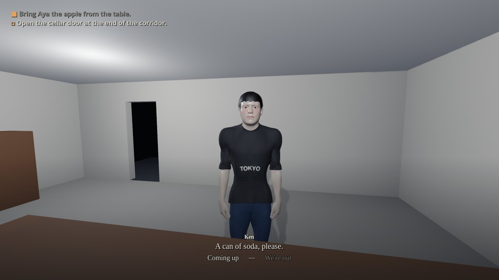
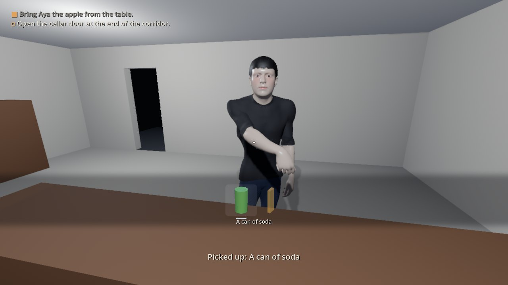
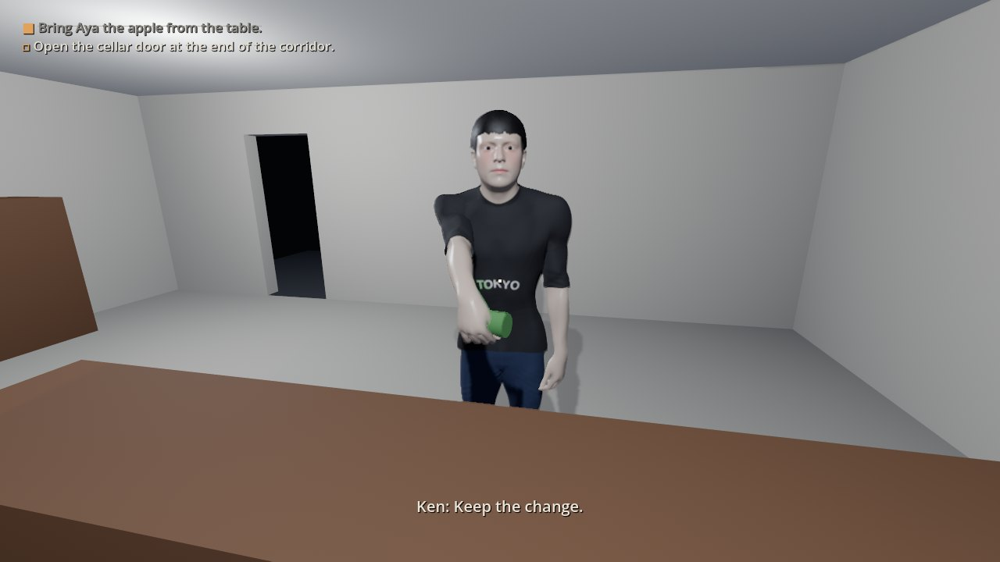
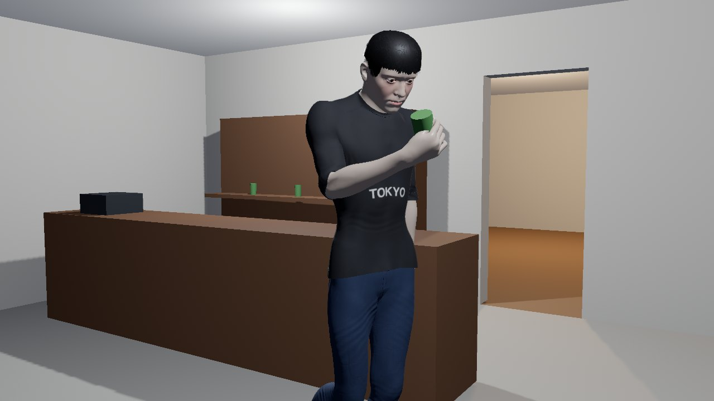
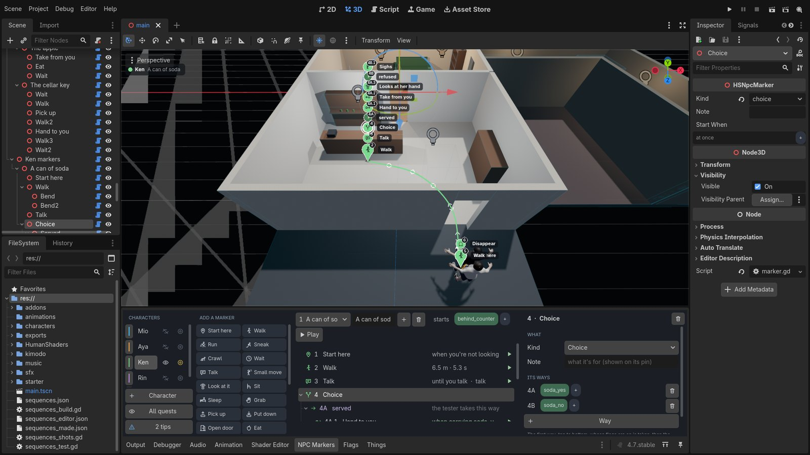
Why it works
- He isn't there until you are. His character has Starts hidden on, and the quest starts on the flag of the Area behind the counter. Start here when you're not looking puts him outside the door while your back is turned.
- Pay first, then take. Hand to you gives whatever is in his hand: if he took the can first, he'd hand it straight back. So the money comes while his hand is empty.
- The wait is the gate. 4A.1 starts when you carry soda and you're within 2.5 m. Until then he stands at the till; with Alive on he checks his wrist and looks about, and his head follows you to the shelf and back.
- Over what comes next. A small movement normally holds the next marker until the hand is back. Ticked, it doesn't: he's already walking when he looks at the can.
- Disappear at the end switches him off completely. Its Then sets
ken_gone, which is what the next customer waits for.
Change it
- A queue. A second character, hidden, whose quest starts when
ken_gone: the same cards, another thing asked for. Three of them and you have a shift. - Something you haven't got. Only the refused way: his face, a line, a longer look at you before he goes.
- He brings something back. Start him with a thing in his hand (a Pick up outside, kept), then Hand to you at the till: a parcel, a wallet someone dropped.
9The last customer: nearer each time you look away
After the man has gone, a woman comes in slowly and stops at the till. She says nothing. Her head follows you. You turn to the shelf and back: she's at the end of the counter. Again: she's behind the counter with you. The third time you look away, she's on you, and the lights go.
Rin, quest The last customer · Starts when: the flag ken_gone
| # | Card | Click in the 3D view | In its form |
|---|---|---|---|
| 1 | Start here | the street outside the shop's door | Starts when: after 3 s · Comes: when you're not looking |
| 2 | Walk | the floor in front of the till; the same two bends | Speed: 0.55 × · Head: follows you, within 220 degrees · Small movements: none |
| 3 | Talk | — | Stays: until the next marker can start · Lines: "..." |
| 4 | Start here | the open end of the counter; arrow along the counter, at you | Starts when: after 2.5 s · Comes: when you're not looking |
| 5 | Wait | — | Stays: until the next marker can start |
| 6 | Start here | the floor behind the counter, your side of it | Starts when: after 2 s · Comes: when you're not looking |
| 7 | Wait | — | Stays: until the next marker can start |
| 8 | Jump scare | the floor a little over a metre from where you'll stand | Starts when: after 1.5 s · Comes: when you're not looking · Then, Sound: sting_big · Fires: ShopScare (the lights flicker) |
| 9 | Event | — | Then, Flags: + rin_gone |
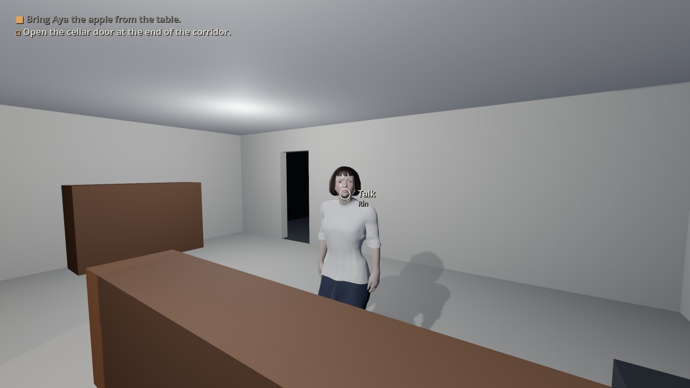
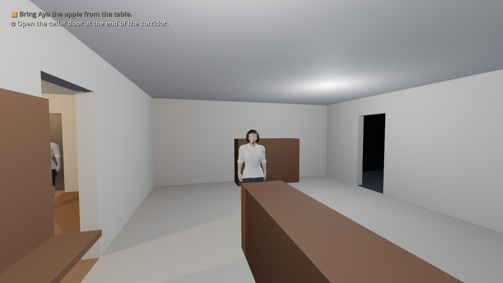
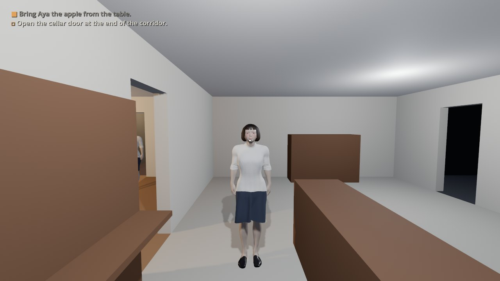
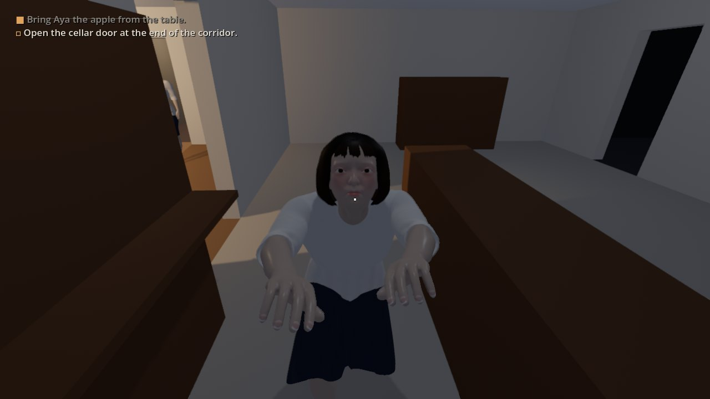
Why it works
- She never moves. There's no walk between the three places: each is a Start here with Comes: when you're not looking. It waits until neither she nor the new place is in your view, then she's simply there. The check counts three changes of place and none where you could see her go.
- After 2.5 s on each one is the dread: look away for a moment and nothing has changed; look away to do your job and it has.
- Small movements: none on her walk in. Someone alive scratches her neck. She doesn't.
- Her head follows through 220 degrees, further than a neck goes comfortably. It carries on from marker to marker, so at every place she's already looking at you.
- The Jump scare's pin is a little over a metre from where you'll be standing. Its Then plays a sting and fires the Scare that flickers the shop's lights.
10Round the corner, then behind you
You walk into the corridor. At the far corner something leans out past the wall's end and watches you. A moment after you've seen it, it draws back. You walk to the corner and look down the side corridor: nothing. It's standing in the corridor behind you, and stays there for as long as you don't turn round.
It, quest Round the corner · Starts when: the flag in_corridor
| # | Card | Click in the 3D view | In its form |
|---|---|---|---|
| 1 | Start here | the floor round the corner, out of sight | — |
| 2 | Peek | the foot of the wall's end, on its hidden side; turn the arrow to look back up the corridor | Stays: until the next marker can start · Head: follows you |
| 3 | Walk | the floor back down the side corridor | Starts when: you see it, after 1.5 s · Pace: creep |
| 4 | Disappear | — | — |
| 5 | Start here | the corridor floor behind where you'll stand at the corner; arrow at the corner | Starts when: the flag at_corner (the area at the corner) · Comes: when you're not looking · Then, Sound: breath_close |
| 6 | Wait | — | Stays: until the next marker can start · Head: follows you |
| 7 | Jump scare | the same spot | Starts when: you see it · Then, Sound: sting_big · Fires: CorridorScare (the lights flicker) |
| 8 | Event | — | Then, Flags: + corridor_done |
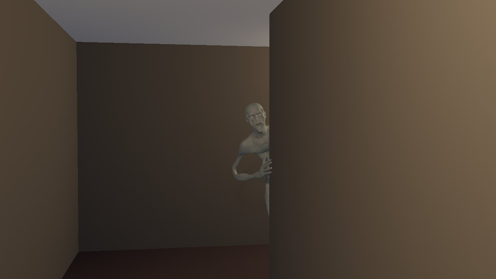
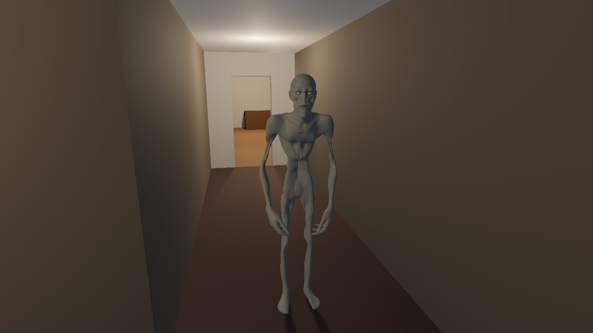
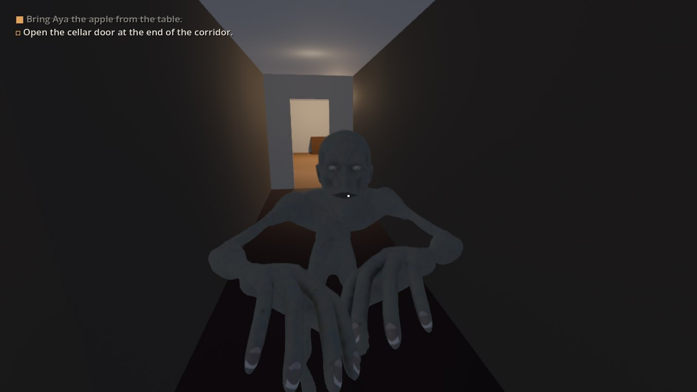
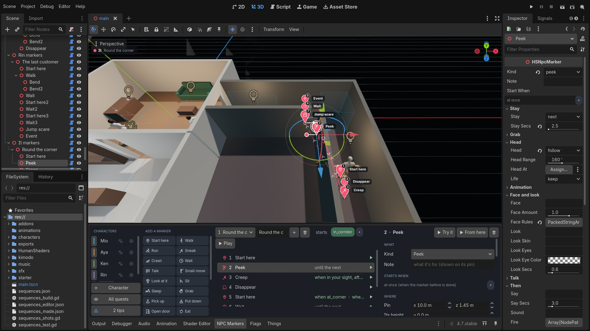
Why it works
- Where a Peek's pin goes. On the floor at the wall's end, on the side she hides on, the arrow pointing through the wall's line at whoever she watches. She stands behind the wall with its end to her right (tick Out to the left for the other way), where her own clip was made to stand her, and leans out. It's made to be seen from the front.
- You see it counts her head where it really is, leant out past the edge, not where her feet are. With after 1.5 s beside it she's sure to have been looking for a moment before she goes.
- Pace: creep for the way back: low and hunched, a creature's walk. Then Disappear: she costs nothing while she's gone.
- Behind you is a Start here when you're not looking, on the flag of the Area at the corner. You're looking down the side corridor; the place behind you isn't in view; she's put there.
- The scare is yours to start. The Jump scare's Starts when is you see it. However long you take to turn, it happens as you do.
11Out of the dark: a crawl, a creep, a blow
The key turns in the cellar door. Behind you, something scrapes. It comes down the corridor on all fours, gets up hunched, comes for you, and hits you.
It, quest Out of the dark · Starts when: the flag cellar_open
| # | Card | Click in the 3D view | In its form |
|---|---|---|---|
| 1 | Start here | the floor at the top of the side corridor, behind you | Comes: when you're not looking · Then, Sound: scrape_stone |
| 2 | Crawl | the floor half way down to you | — |
| 3 | Walk | — | Comes to you instead of to the pin: on · Stops: 0.9 m from you · Pace: creep |
| 4 | Attack | — | Does: throws a punch · At: you |
| 5 | Disappear | — | Then, Flags: + it_done |
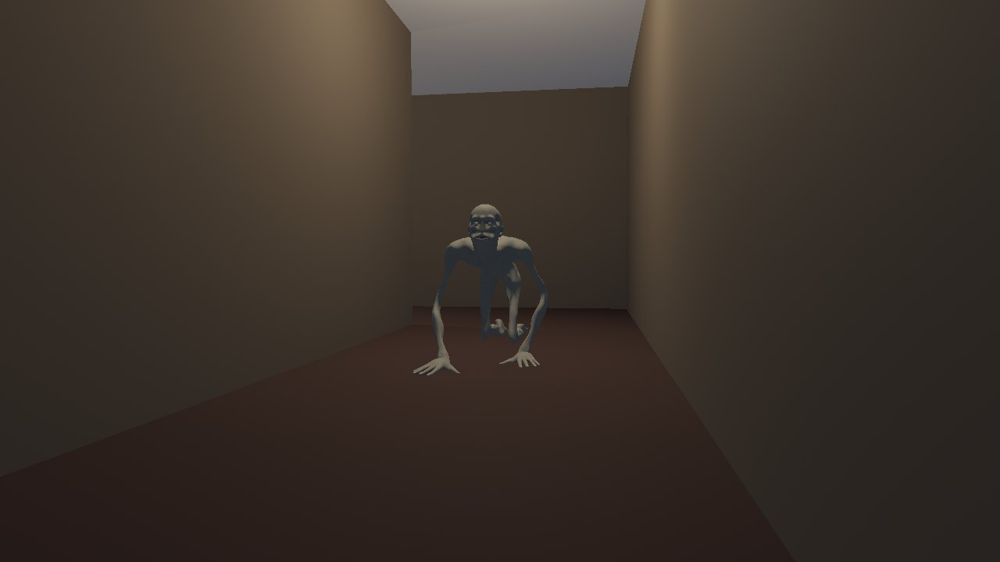
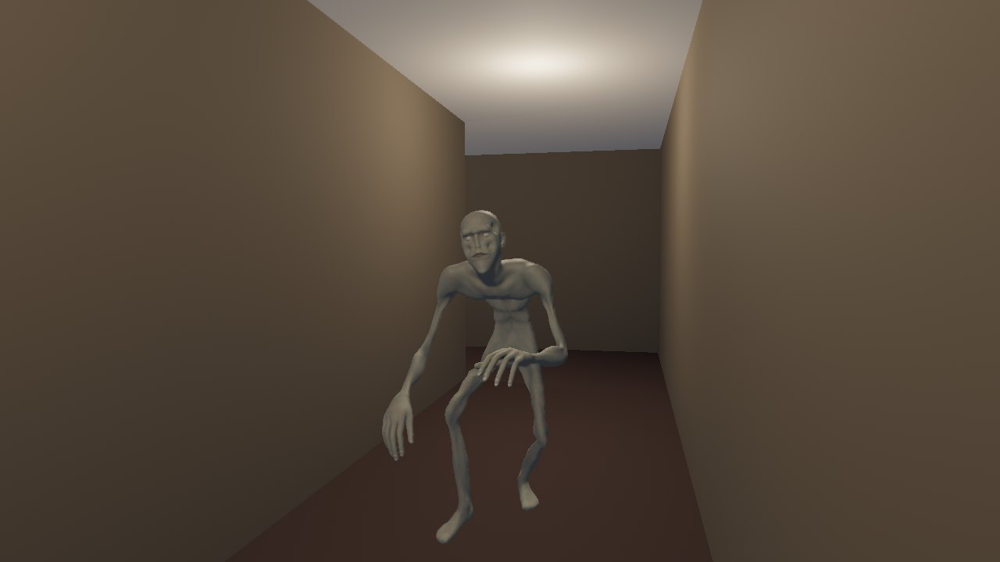
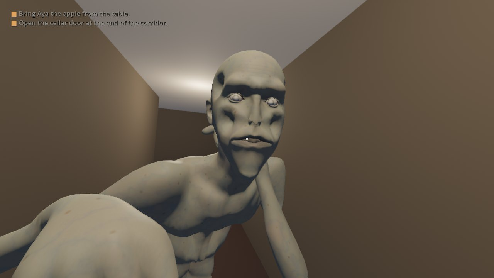
Why it works
- The quest starts on the door's flag: the door's Logic turns
cellar_openon when it's used. The thing you were sent to do is what sets it on you. - Low paces stay low. After a Crawl she rests on all fours until a marker with another pace gets her up. Crawl → creep → the blow is a creature unfolding.
- Attack walks her to where the blow reaches, turns her with you until it's thrown, and carries her fist the last way onto you. Already close enough, she throws it from where she stands. A blow that lands knocks the starter's player's view and is heard as a scare; her
strucksignal is there for a script that wants more (the Story'sdie()). - A sound first. The Start here's Then plays a scrape. You hear it before you see it, and what you do next is yours.
chase.gd under her: from there the chase moves her, until her next marker takes her back.12Getting the most from the IKs
Every clip is made for one body and one place: a table 0.86 m high, a handle a metre up, a mouth where hers is. The room is never exactly that. Three small pieces of the Look plugin close the gap after her clip has played, each frame. You don't add them: the markers do. What you can do is give them good things to work with.
Her head: HSHeadTrack
On any marker, Head: follows you (or someone picked). Her chest, neck, head and eyes share the turn, on top of whatever clip she's in, within an arc. It's carried from marker to marker until one says is her animation's again.
- 160 degrees (80 each side) is a person. 220 is wrong in a way people feel before they see it: use it for things that aren't people. 90 is someone who only glances.
- Turn it on one marker before you want it noticed: on the Walk in, not at the till. A head that was already following reads as attention; one that snaps on reads as a switch.
- Turn it off for leaving. Someone who walks out looking over their shoulder at you all the way is a different scene.
- Pick someone else (Pick, then click them): two characters with each other's heads is a conversation with no lines.
Her hands: HSHandIK and the grip
A reach clip puts her hand about there; the IK carries a point of her hand the rest of the way, as far as her arm goes, and closes her fingers to the thing's thickness. It does this for a thing she takes, a door's handle, what she eats or drinks (to her mouth), a blow (onto whoever it's for), and a hand-over (her palm out toward you).
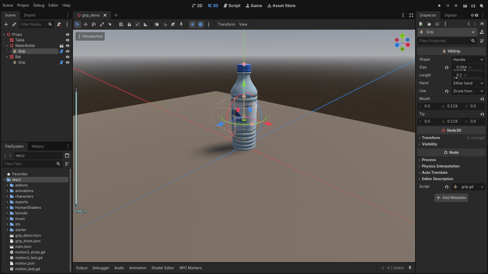
- Give anything she eats, drinks from or carries a grip. Without one it's held by a guess from its size, which is fine for a book and wrong for a mug: the grip is what says the rim is here and keep me upright.
- Carry and Upright on the grip say how it's carried once she keeps it: the mug here is In front of her, upright; a bottle hangs at her side. The character's Carries things overrides it for everything she holds.
- Put the pin on the thing, and the thing where a hand gets to it: 0.8 to 1.0 m up, the floor, or 1.3 to 1.6 m; within 0.30 m of the edge. The IK moves her hand up to 0.30 m. Past that it stops short rather than stretch her arm, and you see a hand close on air. A Put down is the same the other way: what she holds is carried onto its pin.
- A door's handle between 0.95 and 1.05 m, 0.45 m of level floor in front of it. Her hand is put on the handle itself and she stands nearer for a low or a high one.
- A hand-over needs room: you a step away (0.9 to 1.3 m). Comes to you with Stops 1.0 does it. At two metres her hand comes out and the thing changes hands across the gap.
Small movements and carrying: HSGesture
This is the layer: one of her small movements laid over her clip (her arm, a little of her chest and head, nothing below), with the hand that touches her kept on the place it touches however she's turned; and the arm that carries a thing kept in its carry pose through every other clip.
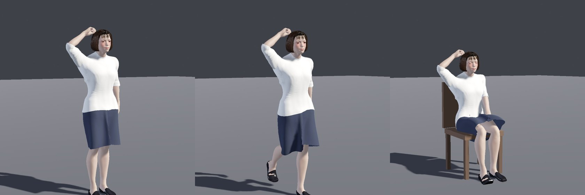
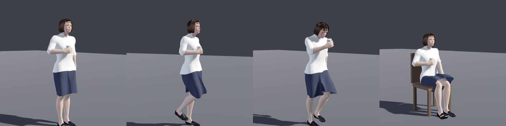
- By name when it means something (the Small movement and Look at it cards), by chance when it's texture (Alive on the character, or Small movements: now and then on a marker from which she should come alive).
- Set none where stillness is the point: someone stalking, someone dead-eyed at the till. Small movements: none on that marker holds until a later one says otherwise.
- They're over standing, walking and sitting only. Not over a run, a sneak or a crawl, and never during an act (a reach, a blow, sitting down). A hand on her hip isn't made for walking; one not made for what she's doing is passed over.
- A hand that's full isn't used. Carrying a mug in her right hand, she scratches with her left. The one exception is the look at what she holds.
- Not every body has every one. A movement a body can't do cleanly (an ogre can't reach its own nose) wasn't baked for it. Problems says so; pick another or One that suits.
- Give her elbow room where she waits: half a metre to each side and in front.
13More to make from the same cards
None of these is built here; each is only cards you've now used, in order.
| The scene | The cards |
|---|---|
| Waiting for someone | Repeat (until a flag) { Walk to the window → Small movement: looks at her wrist → Wait 3 s → Walk back → Small movement: sighs }. The flag is the Area at the door. |
| She shows you something and takes it back | Pick up (kept) → Walk, comes to you → Hand to you → Wait until a flag (you've read it: a Note's Logic) → Take from you → Put down. |
| Two people at a table | Two characters, each: Sit → Head follows the other (Pick) → Small movements: now and then. Add a Talk on one of them. |
| Asleep until you make a noise | Sleep (stays until the next can start) → Walk to the door, Starts when: a flag (a door's Logic sets it when it's opened) → Small movement: glances aside. |
| A shopper | Walk to a shelf → Grab (reach, the shelf's height) → Small movement: a knuckle under her chin → Walk to the next shelf → Pick up (kept) → Walk to the till → the customer recipe. |
| She was sat there a moment ago | The first recipe, then on a flag: Put down → Disappear (when you're not looking). You find the mug on the table, still. |
| It was at the window | Start here outside a window → Wait, head follows you → Disappear, Starts when: you see it, after 1 s. |
| The one who looks like her | The last customer, on the character you've been talking to all game: the same cards, one Event before them that changes her eyes (the Look card). |
14When something looks wrong
| You see | Why, and what to do |
|---|---|
| Her hand closes beside the thing | It's out of her reach's range: between 0.3 and 0.8 m up, or over 1.6 m, or more than 0.30 m in from the edge. Move the thing, or the surface. |
| She walks through the coffee table | The path is yours: add a bend. Nothing steers her round furniture. |
| She takes a long straight walk to a seat or a thing | Sit and Grab walk the last step in a straight line from wherever she is. Put a Walk before them (Problems says so past 2 m). |
| She gets up from the sofa to eat | Eat and Drink are standing clips. For a seated moment use Look at it. |
| A small movement never comes | She was baked before them (bake again), the Look plugin isn't in the project, it isn't made for what she's doing, or her hand is full. Problems names the first two; a card whose movement can't be done where she is passes after 1.5 s. |
| A quest never starts | F7 in the game: the flag it waits for is off. In the Flags tab, a flag nothing turns on is marked. A quest's Starts when can't be after N s: put that on its first marker. |
| "When you're not looking" never happens | The place is in your view, or she is. Move the pin somewhere a player really turns away from. |
| She hands the thing straight back | Hand to you gives what's in her hand. Pay first, take second; or have her put it down between. |
| Take from you does nothing | You don't carry a thing of that name. The name is the Pickup's Item; pick it from the list rather than typing it. |
| What she took from you is invisible in her hand | The project's starter scripts are from before this: a Pickup that was itself the model put an empty model in your pocket. python tools/godot_byhand.py install <folder> --starter. |
| The peek shows her body, or nothing | The pin is on the wrong side of the wall, or the arrow points along it. Pin: the foot of the end, on the side she hides. Arrow: at whoever she watches. Try Out to the left. |
| The mug swings as she walks | It has no grip, or its grip's Carry is At her side. Give it an HSGrip: Drunk from, In front of her, Upright. |
| Two lines flash past | A flag switched at once started the next quest, whose first marker speaks too. Switch the flag at the end of a Wait. |
15The rules, and what's not there
- Markers run top to bottom; one starts when the one before is done and its Starts when is so. Until then she stays as she is.
- Quests run in order; one with a Starts when cuts in the moment it's so; never back up the list; a quest runs once.
- What she is carries on: where she stands, sat or low, hidden, her face, her head, what's in her hand.
- Characters and things meet in flags, tasks and your pocket: the Flags tab shows both ends of every flag.
- Model to
docs/ANIMATION_RULES.md: she doesn't collide with furniture and doesn't see the room.